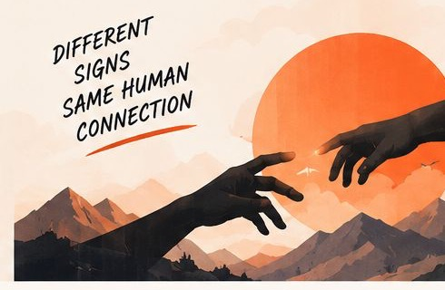
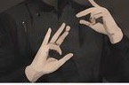

Notifications
Practice today to keep it going.
“Family & People” is ready.
Your personal sign for FRIEND was added.
SignBridge
Communication has no boundaries
Use AI to understand, learn, and share sign language — for a more inclusive world.

Quick Actions
See allYour Progress
View detailsRecent Activity
Today- Translated “HELLO, HOW ARE YOU”
Live Translate · Correct
- Added a personal sign for “THANK YOU”
Teach SignBridge
- Completed lesson “Greetings”
Learn · 3 of 9
Featured Sign
Learn sign
A more inclusive world, together
Communication has no barriers.
SignBridge helps you break down barriers between signers and hearing people — through real-time translation, learning, and shared understanding.
Live Translate
Point your camera at a signing hand and SignBridge turns it into natural, spoken text.
Not what you meant?
Choose the correct sign.
Translated Sentence
Your recognized signs are converted into natural, grammatically correct text.
Hello, how are you?
Sign History
This sessionQuick Phrases
See allSession Stats
Video Translate
Upload a video and let SignBridge recognize the signs and convert them into natural text.
Translated Sentence
Hello, my name is _____. Nice to meet you.
Video Information
sample_sign_video.mp4Detected Signs Timeline
4 of 18 signs detectedSign Sequence
Confidence shown as a word- HELLO92% confident
- MY87% confident
- NAME85% confident
- IS78% confident
- NICE82% confident
Teach SignBridge
Help SignBridge learn new signs from you. Teach, improve, and make communication better for everyone.
Sign Details
Step 2 of 310/50 characters
Groups your sign with related vocabulary.
Describe how the sign is made.
Recording Progress
3/10- Good lighting
- Hand clearly visible
- Keep a consistent pose
- Capture different angles
Captured Examples (3)
Learn
Step-by-step lessons to learn sign language at your own pace.
Greetings
1 of 8Hello
A common greeting used to start a conversation. Raise your hand near your forehead with a gentle wave.
Try it yourself
Turn on your camera and get real-time feedback.
- Hand clearly visible
- Correct hand shape
- Good position
- Keep steady for 1 second
Practice
Sharpen your skills with interactive exercises and real-time feedback.
Select Practice Set
Nice work — clear hand shape and steady position.
Your Progress
View allCurrent Set
10 signs
Tips
Good lighting and a steady, natural pose help SignBridge recognize you faster.
It’s okay to make mistakes. Practice builds progress!
Communication Hub
Multiple ways to communicate. One inclusive space.
Translation
LiveHello, how are you?
I’m good, thank you!
Detected Signs
Supporting evidenceSentence History
- Hello, how are you?
- Nice to meet you!
- Thank you!
- See you later!
Other Ways to Communicate
Quick Phrases
See allCommunication has no barriers
Different signs. Same human connection.
Every conversation you make a little easier brings us closer to a world where everyone is understood.
My Profile
Track your progress, achievements, and personal learning journey.
Learning, practising, and building a more inclusive world with SignBridge.
This Week
3 of 7 days activeLearning Progress
All categoriesRecent Activity
See all- Practiced “Hello”
Today, 10:24 AM · Correct
- Practiced “Thank You”
Today, 10:18 AM · Correct
- Completed lesson: Greetings
Yesterday, 7:40 PM
- Trained a new sign
Yesterday, 6:12 PM
Achievements
See allYour Goals
Settings
Customize your SignBridge experience.
General Settings
Basic preferences for your SignBridge experience.
Choose your preferred language for the interface.
Select the sign language you want to use.
Theme
Choose how SignBridge looks on your device.
Units & Display
Choose your preferred measurement units.
App Preferences
Customize your experience.
Camera Preview
Camera ready
Microphone
AI Model
ActiveRecognition runs on your device. Model details live here, out of your way.
Account & Data
Step 1 of 4
Welcome to SignBridge
Let’s get your camera and preferences ready so SignBridge can help you communicate, learn, and connect with confidence.
- Translate signs in real time
- Learn and practise at your own pace
- Have two-way conversations
Step 2 of 4
Set up your camera
We’ll use your camera to recognize sign language in real-time. Make sure your face and hands are clearly visible.
SignBridge needs access to your camera for real-time sign recognition.
Sit in a well-lit area so your hands are clearly visible.
Keep your upper body and hands within the frame, similar to the example.
Step 3 of 4
Set your preferences
Customize SignBridge to match your needs. You can always change these later in settings.
Choose the language for the app interface.
Sign Language
Step 4 of 4
You’re all set!
SignBridge is ready to help you translate, learn, and communicate with sign language.
Turn signs, speech, or text into meaningful conversations.
Explore interactive lessons to improve your skills.
Help SignBridge learn new signs from your gestures.
Be a part of a community that makes communication accessible for everyone.